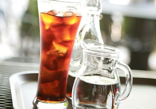

카페소개

영업 시간 : 오전 9시 ~ 밤 10시
휴무 : 매주 수요일(수요일이 공휴일인 경우 수요일 영업, 다음날 휴무)
휴무 : 매주 수요일(수요일이 공휴일인 경우 수요일 영업, 다음날 휴무)
오시는 길

서귀포시 안덕면 사계리 000-000
제주 올레 10코스 산방산 근처
제주 올레 10코스 산방산 근처
이 달의 추천
핸드드립 아이스 커피
1. 1인분 기준으로 서버에 각 얼음 5조각(한조각은 20cc)넣고 추출을 시작한다
2. 평상시 보다 원두의 양은 2배정도(20g)와 추출액은 얼음 포함해서 200cc까지 내린다.
3. 아이스 잔에 얼음 6~7개 섞어서 시원하게 마신다.
